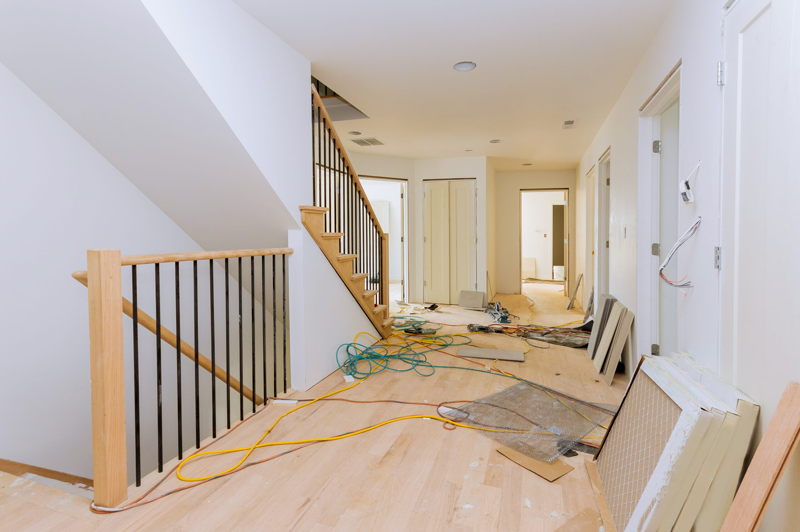

We provide trusted, professional mold remediation services designed to remove mold at the source, protect your property, and restore a safe, healthy environment as quickly as possible.
Searching for the best company for mold remediation near me usually means you’re dealing with a serious issue that needs immediate attention. Mold is not something you want to leave to chance or handle with quick fixes. The company you choose plays a major role in how effectively the problem is resolved. From proper containment to complete removal and prevention, working with the right professionals ensures your home is protected long-term—not just temporarily cleaned.
Not all restoration companies are the same. The best providers of mold remediation near you offer more than just surface cleaning—they deliver a complete solution that addresses the root cause of the problem.
A top-tier company will provide:
Experience, training, and the right equipment are essential. Mold remediation requires precision and knowledge of how mold behaves in different environments, especially in areas like North Texas where humidity and weather changes can contribute to growth.
One of the biggest mistakes homeowners make is hiring a general cleaning service instead of a professional mold removal company. While cleaning companies may remove visible stains, they typically do not address hidden mold or underlying moisture issues.
Mold grows inside porous materials like drywall, wood, and insulation. Without removing or treating these materials properly, mold will return. A certified remediation company follows industry standards to ensure complete removal and prevention.
Choosing a company that specializes in mold remediation services near me ensures the problem is handled correctly from start to finish.
Mold problems often begin after water damage. Whether caused by a burst pipe, roof leak, or flooding, moisture creates ideal conditions for mold to grow within 24 to 48 hours.
The best companies offer both water damage restoration and mold remediation, allowing them to address the full scope of the problem. This combination is critical because removing mold without eliminating moisture will only lead to recurring issues.
Fast response times are another key factor. A company that offers 24/7 emergency service can help minimize damage and prevent mold from spreading further.
When searching for the best mold remediation company near you, there are clear signs you’re working with the right team:
A trustworthy company focuses on long-term solutions, not quick fixes. They take the time to identify the source of the problem and ensure it’s fully resolved.
Choosing a local company has major advantages. Local professionals understand the specific conditions that lead to mold growth in your area, including climate, humidity, and common building materials.
When you search for mold remediation near me, working with a local team also means faster response times. This is especially important when mold is spreading quickly or when water damage has recently occurred.
Local companies are also more familiar with insurance processes and can help guide you through claims if your mold issue is related to a covered event.
The best mold remediation companies follow a structured process to ensure complete removal. This includes inspection, containment, removal, cleaning, and restoration.
First, technicians assess the property and locate all affected areas. Next, containment barriers are set up to prevent mold spores from spreading during removal. Specialized equipment is used to clean the air and remove contaminated materials safely.
After removal, the area is cleaned, treated, and dried to prevent future growth. If necessary, repairs are completed to restore your home to its original condition.
This comprehensive approach is what separates professional mold removal services from temporary solutions.
When choosing between companies, take time to compare their services, experience, and reputation. Look for reviews from local customers and ask about past projects similar to yours.
It’s also important to confirm that the company handles both remediation and repairs. This helps streamline the process and avoids delays caused by working with multiple contractors.
Price should not be the only factor. Choosing the cheapest option often leads to incomplete work and recurring mold problems. Focus on value, expertise, and long-term results.
Hiring an inexperienced or unqualified company can make the problem worse. Improper removal techniques can spread mold spores throughout your home, increasing contamination and repair costs.
Incomplete remediation often leads to mold returning within weeks or months. This not only damages your property but also affects indoor air quality and health.
Working with a trusted, experienced team ensures the job is done safely and correctly the first time.
If you’re looking for the best company for mold remediation near you, S.W.A.T. Restoration is ready to help. Our team provides expert inspections, professional mold remediation, and complete restoration services designed to eliminate mold at the source. We respond quickly, use advanced equipment, and ensure your home is restored safely and thoroughly.
Don’t settle for temporary fixes or take risks with your property. Contact S.W.A.T. Restoration today and get the trusted, local service you need to protect your home and your health.